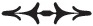

Robert Michael Mapplethorpe 4 Kasım 1946 tarihinde, Pazartesi günü doğdu. Long Island, Floral Park’ta büyümüştü ve altı çocuğun üçüncüsüydü. Gamsız çocukluğu güzelliğin karşısında duyduğu büyülenmişlik hissiyle renklenmiş, yaramaz bir oğlandı. Genç gözleri her bir ışık pırıltısını, mücevherlerin ışıltısını, bir mihrabın üzerindeki zengin süslemeleri, altın rengi bir saksafonun cilasını ya da bir dizi mavi yıldızı gizlice kaydediyordu. İyi huylu ve utangaçtı, keskin bir doğası vardı. Çok erken yaşlarda bile heyecanı ve heyecan yaratmayı severdi.
Işık, çocuk ellerinin arasında tuttuğu boyama kitabının sayfalarına düşmüştü. Renklendirme onu heyecanlandırıyordu; boşluğu doldurmak değil de başka hiç kimsenin aynı şekilde yapamayacağı bir biçimde renkleri seçmekti onu heyecanlandıran. Tepelerin yeşilinde o kırmızıyı görüyordu. Mor kar, yeşil ten, gümüş rengi güneş. Diğerlerinin üzerinde yarattığı etkiyi seviyordu, kardeşlerinin rahatsız olması gibi. Çizim konusunda bir yeteneği olduğunu fark etti. Doğal bir tekniği vardı ve gizlice imgelerini soyut ve çarpık bir hale getirdi; yeteneklerinin de geliştiğini hissediyordu. Bir sanatçıydı ve bunu biliyordu. Bu çocukça bir his değildi. Sadece ne olduğunun farkına varmıştı.
Işık, Robert’ın çok sevdiği takı yapım kiti üzerine; vernikli boya şişelerinin ve küçük fırçaların üzerine düşmüştü. Parmakları hızlıydı. Malzemeleri biraraya getirip annesi için broşlar yapabiliyor oluşuna bayılıyordu. Bunun kızlara uygun bir hobi, takı yapım kitinin de kız çocukları için tipik bir Noel hediyesi oluşuna aldırmıyordu. Sportmen ağabeyi, Robert çalışırken onunla alay ediyor ve burun kıvırıyordu. Annesi Joan, birbiri ardına yaktığı sigaraların eşliğinde, oğlunun masaya oturmuş, çalışkan çalışkan onun için mercan boncuklardan yeni bir kolye yapışını izlemekten keyif alıyordu. Bunlar sonradan Robert’ın takacağı kolyelerin öncüleriydi; babasını, Katolizmi, ticari ve askeri seçeneklerini geride bırakarak LSD ve sadece sanata adanmış bir yaşamın ilk habercileriydi.
Robert’ın bu kırılmayı yaşaması kolay olmamıştı. İçinde inkar edilemeyecek bir şeyler vardı ancak ailesini de mutlu etmek istiyordu. Robert gençliğinden ve ailesinden nadiren bahsederdi. Her zaman iyi bir çocukluğu olduğunu, güvende büyüdüğünü ve pratik anlamda ihtiyaçlarının karşılandığını söylerdi. Fakat gerçek duygularını hep saklar, babasının o sakin ve soğukkanlı duruşunu taklit ederdi.
Annesi oğlu için kilisede bir gelecek hayal ediyordu. Robert, mihrapta papazlara çıraklık etmekten hoşlanıyordu ancak bunun ardında yatan neden daha ziyade gizli yerlere, kutsal şeylere, yasak odalara, cübbe ve ritüellere ulaşabilmenin heyecanıydı. Kiliseyle dinsel anlamda bir ilişkisi yoktu; ilgisi estetik olanaydı. Belki kendi iç çatışmasını yansıttığı için iyi ile kötü arasındaki savaşın heyecanı onu cezbediyor ve henüz aşmaya cesaret edemediği bir çizgiyi ortaya çıkarıyordu. Yine de ilk toplu duasında kutsal görevini yerine getirmiş olmanın gururuyla dik durup ilgi odağı olmanın keyfini çıkarmıştı. Kocaman Baudelaire tarzı bir fiyonk ve bir de kolluk -isyankâr bir Arthur Rimbaud tarafından bir zamanlar takılanın aynısı- takmıştı.
Ailesinin evinde ne kültür ne de bohemlere ait düzensizliğe dair bir iz vardı. Düzenli ve temizdi, savaş sonrası orta sınıf duyarlılıklarının bir modeliydi; dergiler dergilikte, mücevherler mücevher kutusundaydı. Babası Harry çok sert ve yargılayıcı olabiliyordu ve Robert, bu özelliklerinin yanı sıra, güçlü ve duyarlı parmaklarını ondan almıştı. Annesiyse oğluna düzen anlayışını ve sanki hep bir sırrı varmış gibi hissettiren eğri gülüşünü vermişti.
Robert’ın çizimlerinden bazıları koridordaki duvarda asılı dururdu. O evde yaşadığı sürece itaatkâr oğul olmak için elinden geleni yaptı. Hatta eğitim programını bile babasının isteği doğrultusunda seçti; grafik sanatı. Eğer kendi başına bir şeyler keşfettiyse de, bunu kendine sakladı.
Robert benim çocukluk maceralarımı dinlemeye bayılırdı ama ben onunkileri sorduğumda pek bir şey anlatmazdı. Ailesinin fazla konuşmadığını, okumadığını ve derin duygularını paylaşmadığını söylerdi. Toplumsal bir mitolojileri yokmuş; ihanet, hazine ya da kardan kalelere dair öyküler yokmuş. Güvenli bir varoluşmuş ama bir peri masalı değilmiş.
“Benim ailem sensin” derdi.
Genç bir kızken başımı derde soktum.
1966 yazının sonuna doğru benden bile tecrübesiz bir oğlanla yattım ve hemen hamile kaldım. Doktora başvurdum, ama doktor endişemi şüpheyle karşılamıştı. Kadınların ay halleri üzerine biraz da alay edercesine bir nutuk çekerek beni eve yolladı. Ancak haftalar geçtikçe bir bebek taşıdığımı anlıyordum.
Seks ve evliliğin neredeyse eşanlamlı olduğu bir dönemde büyümüştüm. Hiçbir korunma yöntemimiz yoktu ve on dokuzuma geldiğimde dahi cinsel açıdan çok cahildim. Birlikteliğimiz öyle kısa sürmüştü ki adamakıllı birleşip birleşmediğimizden bile emin değildim. Ama son söz her zaman tabiat ananındı. Küçüklüğünden beri kız olmayı ve büyümeyi istemeyen biri olarak böyle bir sınava tabi tutulmamın ironisini de kaçırmış değilim. Doğa burnumu yere sürtüyordu.
Henüz on yedi yaşındaki delikanlı öylesine tecrübesizdi ki olaydan sorumlu tutulması söz konusu değildi. Kendi başımın çaresine bakmak durumundaydım. Şükran Günü’nde evimizin çamaşır odasındaki sundurmada oturmuştum. Yazları fabrikada çalışırken uyuduğum yer burasıydı. Yılın geri kalan kısmında da Glassboro Devlet Öğretmen Okulu’na devam ediyordum. Annemin ve babamın kahve yapışını, küçük kardeşleriminse masanın çevresinde gülüşmelerini duyabiliyordum. Ben en büyük çocuk olarak ailenin gururuydum, üniversitedeydim. Babama göre kendime bir koca bulacak kadar çekici değildim; öğretmenlik bana ihtiyacım olan güvenceyi sağlayabilirdi. Öğrenimimi tamamlayamazsam buna çok üzülürdü.
Uzun uzun oturup karnımın üzerinde duran ellerimi seyrettim. Delikanlıyı sorumluluğundan azat etmiştim. Kozasının içinde çırpınan bir güve gibiydi ve onun bu dünyaya zorlu gelişine mani olmak istemiyordum. Yapabileceği bir şey olmadığını biliyordum. Ayrıca bir bebeğe bakamayacağımdan da emindim. Merhametli bir profesörümden yardım istedim; benim için bebek özlemi çeken eğitimli bir çift buldu.
Odamda çevreyi inceledim. Bir çamaşır makinesi ve bir kurutucu, kirli iç çamaşırlarıyla ağzına kadar dolu büyük bir hasır sepet ve ütü tahtası üzerindeki babamın katlanmış gömlekleri. Üzerinde çizim kalemlerim, eskiz defterim ve Illuminations’ın bir nüshasını bulundurduğum ufak bir masa vardı. Ailemle yüzleşmeye kendimi hazırlamak için oturdum, sessizce dua ediyordum. Kısacık bir an için ölecekmiş gibi hissettim ama yine hemen, her şeyin yoluna gireceğini anladım.
Aniden içime dolan sükûneti tanımlamam çok zor. İçimi dolduran bir görev hissi korkularımın önüne geçmişti. Bu duyguyu bebeğe atfettim; durumumu anlayabildiğini hayal ediyordum. Kendime güvenim tamdı. Görevimi yapacak, güçlü ve sağlıklı olacaktım. Asla arkama bakmayacaktım. Ne fabrikaya ne de öğretmen okuluna geri dönecektim. Sanatçı olacak, değerimi ispatlayacaktım. Bu yeni kararla birlikte ayağa kalkıp mutfağa doğru ilerledim.
Üniversiteden atılmıştım ama artık umurumda değildi. Harika bir meslek olduğunu düşünmeme rağmen, kaderimde öğretmenlik yapmak olmadığını biliyordum. Çamaşır odamda yaşamayı sürdürdüm.
Üniversiteden sınıf arkadaşım Janet Hamill sayesinde moralim düzelmeye başladı. Annesini kaybeden Janet ailemle birlikte yaşamak üzere evimize gelmişti. Küçük odamı onunla paylaşıyordum. İkimizin de uçuk kaçık hayalleri vardı, aynı zamanda rock’n roll sevgisini paylaşıyorduk. Akşamlarımızı Beatles mı, Rolling Stones mu tartışması üzerine uzun saatler konuşarak geçirirdik. Blonde on Blonde’ı satın alabilmek için müzik mağazası önünde saatlerce kuyrukta dikilmiş, Bob Dylan’ın albüm kapağındakine benzer bir eşarbı aramak için Philadelphia kazan biz kepçe gezmiştik. Dylan motosiklet kazası geçirdiğinde onun için mumlar yaktık. Çimlerin içine uzanıp, Janet’ın kapıları açık biçimde yol kenarına park edilmiş eski püskü arabasının radyosundan “Light My Fire”ı dinledik. Uzun eteklerimizi Vanessa Redgrave’in Blow-Up (Cinayeti Gördüm) filmindeki mini etekler gibi kısacık kestik ve Oscar Wilde ile Baudelaire’in giydiğine benzer parkalar bulabilmek için kelepir dükkânlarının altını üstüne getirdik.
Hamilelik dönemi boyunca Janet benim en güvendiğim arkadaşım olarak kaldı fakat hamileliğim ilerledikçe kendime başka bir sığınak bulmak zorundaydım. Komşuların yargılayıcı bakışları altında sanki bir suçluya yataklık ediyormuş gibi hisseden öz ailem bu sığınağı sağlayamazdı. Kendime bir vasi aile buldum; güneyde deniz kıyısında oturan ve soyadları yine Smith olan bir aile. Bir ressam ile çömlekçi olan karısı beni nezaketle kabul ettiler. Küçük bir oğlan çocukları vardı. Onlarınki disiplinli ama sevgi dolu bir ortamdı; makrobiyotik gıdalar, klasik müzik ve sanatla çevrili. Kendimi yalnız hissediyordum ama Janet müsait olduğunda beni ziyaret ediyordu. Küçük bir cep harçlığım vardı. Her pazar uzun bir yürüyüş sonunda vardığım metruk bir plaj kafesinde sağlıklı gıdalarla dolu bir evde yasak olan iki şeyi tüketirdim: Kahve ve jöleli çörek. Bu küçük bağımlılıklarımın tadını müzik kutusuna bir çeyreklik atıp “Strawberry Fields” parçasını arka arkaya üç kez dinleyerek çıkarırdım. Bu benim özel ayinimdi, güçsüz düştüğümde ihtiyacım olan kudreti John Lennon’ın sesinden ve sözlerinden alırdım.
Paskalya tatilinden sonra ailem beni almaya geldi. Doğum sancım dolunaya rastlamıştı. Beni arabayla Camden’daki hastaneye götürdüler. Evlilik dışı durumumdan dolayı hemşireler bana son derece zalim ve umursamaz davrandı; doğum sancılarımın başladığını doktora haber vermeyip beni saatlerce masanın üzerinde beklettiler. Beatnik görünüşümle ve ahlaksız davranışımla acımasızca alay ettiler, bana “Drakula’nın kızı” diye isim takıp uzun siyah saçlarımı kesmekle tehdit ettiler. Doktor geldiğinde çok sinirlenmişti. Onlara ters doğum gerçekleştirdiğimi ve yalnız bırakılmamam gerektiğini söylerken bağırdığını duyabiliyordum. Doğum sancıları içinde yatarken, açık bir pencereden gece boyunca akapella şarkılar söyleyen delikanlıların seslerini duyabiliyordum. New Jersey, Camden sokaklarında dört parçalık bir armoni vardı. Anestezi etkisini gösterdikçe hatırladığım son şey doktorun endişeli yüzü ve yardımcıların fısıldaşmalarıydı.
Çocuğum Guernica Bombardımanı’nın yıldönümünde doğmuştu. Tablo üzerine düşündüğümü anımsıyorum; ölü çocuğunu kucağında tutarak ağlayan anne... Kollarımın boş olmasına ve ağlamama rağmen benim çocuğum yaşayacaktı, sağlıklıydı ve ona iyi bakılacaktı. Buna tüm kalbimle güvendim ve inandım.
Anma Günü’nde Sanat Müzesi yakınındaki Jan Dark (Jeanne d’Arc) heykelini ziyaret etmek için otobüsle Philadelphia’ya gittim. Küçük bir kızken ailemle birlikte gittiğimizde heykel orada yoktu. Atının üstünde ne de güzel görünüyordu; sancağını güneşe doğru kaldıran genç bir kız esir düşmüş kralını Rouen’daki tahtına geri çıkarır ancak ihanete uğrar ve kazığa bağlanarak yakılır; geçmişte aynı tarihe denk düşen günde. Kitaplardan tanıdığım genç Jeanne ve asla tanıyamayacağım çocuğum. İkisine de hayatımla ilgili doğru şeyler yapacağıma dair söz verdikten sonra eve doğru yola çıktım. Yolda Camden’daki Goodwill mağazasında durup kendime uzun gri bir yağmurluk aldım.
Aynı gün Robert da Brooklyn’de asit çakmıştı. Çalışma alanını toparladı, sandalye niyetine yastık kullandığı alçak bir masanın üzerindeki resim bloknotu ile kalemlerini düzenledi. Masaya temiz bir tabaka kuşe kâğıt serdi. Asit kafasına vurduğunda çizemeyebileceğini biliyordu; ancak olur da çizmek isterse, malzemelerinin el altında olmasını istemişti. Daha önce kafası asitliyken çizmeyi denemişti; fakat asit onu karanlık yerlere, normalde gitmekten kendini alıkoyacağı taraflara çekiyordu. Kafası iyiyken gördüğü güzellikler birer aldatmacaydı, sonuçlarıysa sert ve nahoş olurdu. Bunun ne anlama geldiği üzerinde pek kafa yormazdı. Öyleydi işte.
Önceleri LSD hafif gelmişti; bu kez her zamankinden daha fazla aldığı için hayal kırıklığı yaşıyordu. Beklenti ve gergin endişe duygularıyla dolu evreden geçmişti. Bu duyguyu çok seviyordu. Midesinden yükselen korkunun ve heyecanın izini sürdü. Aynı hissi daha önce de yaşamış; kadife perdelerin ardında küçük cübbesi içinde, elinde tören haçıyla yürüyüşe başlamaya hazır bir papaz çırağı olarak tecrübe etmişti.
Sanki bir şey olmayacaktı.
Şömine rafının üzerinde duran yaldızlı çerçeveyi düzeltti. Bileğinin üzerindeki damarlardan kanının aktığını hissetti. Gözü manşetinin parlak uçlarına takıldı. Odasının içinde uçakları, sirenleri ve köpekleri duyabiliyor, nabzını duvarlarda hissediyordu. Dişlerini sıktığını fark etti. Soluk alıp verişinin yıkılan bir tanrının nefesine benzediğini duyumsadı. Korkunç bir zihin açıklığı çöktü üzerine, kare kare hareket ederek ve zorlanarak dizlerinin üzerine indi. Birden zihni yumuşak şekerler gibi uzayan anılarla doldu. Okuldaki diğer askeri öğrencilerin suçlayıcı ifadeleri, tuvaletten taşan kutsal su, onu umursamadan yanından yürüyüp giden sınıf arkadaşları, tasvip etmeyen babası, askeri okuldan atılışı, annesinin gözyaşları... Hepsi de yalnızlığının ve yıkılan dünyasının içine kan gibi dolmaya başlamıştı.
Doğrulmaya çalıştı. Bacakları tamamen uykudaydı. Ayağa kalkmayı başarıp bacaklarını ovaladı. Ellerindeki damarlar belirgin bir şekilde şişmişti. Ona hapishane olan dış derisini değiştirircesine, ter içinde kalmış gömleğini çıkardı.
Masasındaki kâğıt parçasına baktı. Henüz çizmemiş olmasına rağmen yapacağı işi kâğıdın üzerinde görebiliyordu. Tekrar dizlerinin üzerine çöktü ve akşamüstü güneşinin son ışıklarından yararlanarak kendinden emin bir şekilde çalışmaya başladı. İki resim bitirdi; şekilsiz, örümceğe benzer. Gördüğü kelimeleri yazdı ve bu kelimelerin ağırlığını hissetti: Evrenin yok edilişi. 30 Mayıs ’67.
Güzel oldu diye düşündü, hafif bir pişmanlıkla. Çünkü onun gördüklerini hiç kimse, ne görebilecek, ne de anlayabilecekti. Bu duyguya alışmıştı. Hayatı boyunca bunu tecrübe etmişti; ne var ki geçmişte, bu durum sanki onun hatasıymışcasına telafi etmeye uğraşmıştı. Uyumlu davranmış, ödün vermiş, babasının, öğretmenlerinin ve yaşıtlarının onayını alabilmek için çabalamıştı.
İyi bir insan mıydı, yoksa kötü mü? Emin değildi. Fedakâr mıydı? Yoksa tam bir iblis mi? Fakat tek bir şeyden emindi. O bir sanatçıydı. Ve bunun için asla kimseden özür dilemeyecekti. Bir duvara yaslanıp sigarasını içti. Zihni berraklaştı; biraz sarsılmıştı ama bunun sadece fiziksel bir durum olduğunu biliyordu. İçinde mayalanan ancak adını koyamadığı başka bir duygunun varlığını hissetti. Her şey kontrolü altındaymış gibiydi. Artık bir köle olmayacaktı.
Gece karanlığı çökerken susadığını hissetti. Canı çikolatalı süt istiyordu. Açık olabilecek tek yer vardı. İçindeki değişimi hissediyordu; köşeyi döndü ve karanlığın içinde sırıtarak Myrtle Caddesi’ne doğru ilerledi.
1967 ilkbaharında hayatıma çeki düzen verdim. Çocuğumu sağlıklı bir şekilde dünyaya getirmiş, eğitimli ve sevgi dolu bir ailenin korumasına teslim etmiştim. Okumaya devam etmek için gerekli olan disipline, konsantrasyona ve de paraya sahip olmadığım için öğretmen okulundan ayrıldım. Philadelphia’da tipik bir fabrikada asgari ücretle geçici bir işte çalışıyordum.
En öncelikli kaygım bir sonraki durağımın neresi olacağı ve oraya varınca ne yapacağımdı. Bir sanat okuluna gidecek param olmadığını ve hayatımı kazanmam gerektiğini bilmeme rağmen, hâlâ bir sanatçı olduğum umuduna tutunuyordum. Yaşadığım kasabada kalmam için hiçbir neden yoktu; ne bir gelecek umudu, ne de sosyal bir bağ. Ailem bizi dini sohbetler, şefkat ve medeni haklarla örtülü bir atmosferde yetiştirmişti ancak Güney Jersey’in kasaba dokusu, bir sanatçının yetişmesi için uygun sayılmazdı. Dostlarımdan birkaçı şiir yazmak ve sanat okumak için New York’a gitmişti; ben de kendimi çok yalnız hissediyordum.
Arthur Rimbaud’yla avunuyordum; ilk kez on altı yaşındayken, Philadelphia otobüs garının karşısında bulunan ufak bir kitapçıda karşıma çıkmıştı. Gururlu bakışları Illuminations’ın kapağından benimkilerle buluştu. İsyankâr zekâsı beni ateşlemiş, ben de onu bir hemşerim, akrabam, hatta gizli sevgilim gibi kucaklamıştım. Kitabı alacak doksan dokuz sentim olmadığı için cebe attım.
Şifresini tam olarak çözemesem de, Rimbaud’nun kana kana içtiğim mistik bir dili vardı. Ona karşı duyduğum karşılıksız sevgi o güne kadar hissettiğim herşey kadar gerçekti. Huysuz ve cahil bir grup kadınla birlikte çalıştığım fabrikada onun adıyla taciz ediliyordum. Yabancı dilde kitap okuduğum için komünist olduğumdan şüphe ediyor, onu ele vermem için beni tuvalette sıkıştırıp tehdit ediyorlardı. İçin için kaynamaya başladığım atmosfer işte böyle bir yerdi. Bense Rimbaud için yazıyor, onunla ilgili hayaller kuruyordum. Beni fabrika yaşantısının günlük dehşetlerinden koruyan meleğim olmuştu. Cenneti keşfetmemi sağlayacak kılavuzu yaratan ellerine sıkı sıkı sarılmıştım. Onun var olduğunu bilmek, yürüyüşüme bile sökülüp atılması kolay olmayan bir güven katıyordu. Illuminations’ımı ekoseli bir bavula koydum. Birlikte kaçacaktık.
Planımı yapmıştım. Brooklyn’deki Pratt Enstitüsü’nde okuyan arkadaşlarımı arayacaktım. Çevrelerine girersem, onlardan bir şeyler öğrenebileceğimi düşünmüştüm. Haziran’ın sonlarına doğru fabrikadaki işimden çıkarılınca, bunun harekete geçmek için bir işaret olduğunu düşündüm. Güney Jersey’de iş bulmak zordu. Columbia Records’ın Pitman’daki fabrikasında ve Camden’daki Campbell Çorba Şirketi’nde işe alınmak için sırada bekliyordum; fakat her iki iş de midemi bulandırıyordu. Tek yönlü bir gidiş bileti için yeterli param vardı. Şehirdeki tüm kitapçılara bakmayı planlıyordum. Benim için ideal iş buydu sanki. Garsonluk yapan annem bana, beyaz ayakkabılarla sade bir şekilde paketlenmiş yeni bir üniforma verdi.
“Sen asla bir garson olamayacaksın,” dedi, “ama yine de sana yardım edeceğim.” Kendi tarzında bana desteğini gösteriyordu.
3 Temmuz’du ve bir Pazartesi günüydü. Gözyaşlarıyla dolu vedalardan sıyrılıp Woodbury’ye bir buçuk kilometre kadar yürümüş, Philadelphia’ya giden Broadway otobüsünü yakalamış, çok sevdiğim Camden’dan geçerken bir zamanlar çok gösterişli olan Walt Whitman Oteli’nin hüzünlü dış cephesini saygıyla selamlamıştım. Bu mücadeleler kentini terk ederken içimde bir acı hissettim, fakat burada bana göre bir iş yoktu. Büyük tersane kapanıyordu, çok yakında herkes iş arıyor olacaktı.
Market Caddesi’nde inip Nedick’in Yeri’nde durdum. Müzik kutusuna bir çeyreklik attım, Nina Simone’dan iki parça çaldım ve son bir kez çörek ve kahve aldım. Filbert Sokağı’ndan otobüs terminaline giderken, son birkaç yıldır musallat olduğum karşı caddedeki küçük kitapçıya uğradım. Rimbaud’mu cebe attığım noktada durakladım. Rimbaud’nun yerinde yıpranmış bir adet Love on the Left Bank cildi duruyordu; içinde, ellili yılların sonunda Paris’teki yaşama dair siyah beyaz kumlu fotoğraflar bulunan bir kitap. Güzeller güzeli Vali Myers’ın dalgalı saçları, sürmeli gözleri, Latin Mahallesi’nde dans edişi beni derinden etkilemişti. Kitabı çalmamış, fakat görüntüleri zihnime kazımıştım.
Son gidişimden bu yana New York’a bilet fiyatlarının ikiye katlanmış olması benim için büyük bir darbe oldu. Bilet alamamıştım. Ne yapacağımı düşünmek için bir telefon kulübesine girdim. Tam bir Clark Kent anıydı. Kız kardeşimi aramayı düşündüm fakat eve dönmeye utanıyordum. Ancak orada, telefonun altındaki rafta, sarı sayfaların hemen üzerinde beyaz, kaliteli bir kadın cüzdanı duruyordu. İçinde bir madalyon ve otuz iki dolar -son işimde neredeyse bir haftada kazandığım para- vardı.
Yapmamam gerektiğini bilsem de parayı aldım, fakat sahibi en azından madalyonuna kavuşur umuduyla cüzdanı bilet gişesine bıraktım. Cüzdanda sahibinin kim olduğunu gösteren bir şey yoktu. Tek yapabildiğim kim olduğunu bilmediğim bu velinimetime yıllar boyu, defalarca içimden teşekkür etmek oldu. O, harekete geçmek için ihtiyacım olan son bir parça cesareti bana sağlayan kişiydi. Küçük beyaz cüzdanın bana bağışlanmasını, kaderin beni ileri iten eli olarak yorumladım.
Yirmi yaşında o otobüse bindim. Tulumum, siyah boğazlı kazağım ve Camden’da aldığım eski gri yağmurluğum üzerimdeydi. Sarı kırmızı ekoseli küçük bavulumun içinde birkaç çizim kalemi, bir defter, Illuminations, birkaç parça giysi ve küçük kardeşlerimin resimleri vardı. Batıl inançlı biriydim. O gün Pazartesi’ydi, ben Pazartesi günü doğmuştum. New York’a gitmek için iyi bir gündü. Geleceğimi kimse bilmiyordu, ancak her şey beni bekliyordu.
Port Authority’den hemen metroya binip Jay Sokağı’na ve Borough Hall’a, oradan da Hoyt-Schermerhorn’a ve DeKalb Caddesi’ne gittim. Güneşli bir öğleden sonraydı. Kendime kalacak bir yer bulana kadar arkadaşlarımın beni yanlarına alacaklarını umuyordum. Bendeki adresteki kahverengi taş binaya gittim ama taşınmışlardı. Yeni kiracı kibardı. Dairenin arkasındaki bir odaya yönlendi ve oda arkadaşının yeni adresi biliyor olabileceğini söyledi.
Odaya girdim. Basit demir bir yatağın üzerinde bir delikanlı uyumaktaydı. Açık tenliydi, dağınık kara kıvırcık saçları vardı. Çıplak göğsünde sıra sıra boncuklarla yatıyordu. Oracıkta dikildim. Gözlerini açıp gülümsedi.
Ona durumumu anlatınca tek hareketle doğruldu, sandaletlerini ve beyaz tişörtünü giydikten sonra onu izlememi işaret etti.
Önümden yürürken onu izledim; seri adımlarla ilerliyordu, bacakları çok az parantezdi. Elleri dikkatimi çekti, parmaklarını hafifçe baldırlarına vuruyordu. Onun gibi birini hiç görmemiştim. Beni Clinton Caddesi’nde bir diğer kahverengi taş binaya getirdi, selamlayarak veda ettikten sonra gülümsedi ve yoluna devam etti.
Gün ilerledi. Arkadaşlarımı bekledim. Son sözü talih söyledi; gelmediler. Gidecek bir yerim olmadığı için o gece binalarının kırmızı eşiğinde uyuyakaldım. Uyandığımda Bağımsızlık Günü’ydü; o tanıdık tören alayını, gaziler pikniğini ve havai fişekleri evden uzakta ilk görüşümdü bu. Havada dinmek bilmez bir heyecan vardı. Çeteler halinde dolaşan çocuklar ayaklarımın dibinde çatapat patlattılar. O günü, sonraki birkaç hafta da olduğu gibi, sevecen insanlar, başımı sokacak bir yer ve en acili de bir iş arayarak geçirecektim. Yaz mevsimi cana yakın bir öğrenci bulmak için yanlış zamandı. Kimse yardım eli uzatmak konusunda istekli değildi. Herkes bir mücadele içindeydi ve ben de köy faresi garibanın tekiydim. Sonunda şehre dönüp Central Park’taki Deli Şapkacı heykelinin yakınlarında uyudum.
5. Cadde boyunca dükkân ve kitapçılara iş başvurusu formları bıraktım. Sık sık kocaman bir otelin karşısında durur ve uzaydan gelmiş bir gözlemci gibi ayrıcalıklı sınıfın Proust tarzı yaşam stilini, altın ve kahverengi desenli zarif bavullarla simsiyah arabalardan çıkışlarını izlerdim. Hayatın bambaşka bir yüzüydü bu. Paris Tiyatrosu ile Plaza Oteli’nin arasına at arabaları dizilmişti. Ortalığa bırakılan gazetelerden akşamın etkinlik haberlerini takip etmeye çalışıyordum. Metropolitan Operası’nın karşısında durup içeri giren insanları izliyordum; onları bekleyen heyecanı sezebiliyordum.
Bu gerçek bir şehirdi; hareket vardı, cinsellik vardı. Müstehcen filmler gösteren sinemalar, cüretkâr kadınlar, parıltılı hediyelik eşya satan dükkânlar ve sıra sıra dizili sosisli sandviç satıcılarıyla ile dolu 42. Sokak’ta yürürken heyecanın peşine düşmüş, küçük sürüler halinde dolaşan genç bahriyeli gruplar, hafifçe omzuma çarparak yanımdan geçiyordu. Oyun salonlarında dolaştım, taze istiridye tepelerini midelerine indiren siyah paltolu adamlarla dolu muhteşem Grant’s Raw Bar’ın penceresinden içeri baktım.
Gökdelenler çok güzeldi. Sadece büyük şirketlerin dış kabukları gibi görünmüyorlardı; onlar Amerika’nın küstah ama insansever ruhunun birer anıtı gibiydi. Her mahallenin kendine has bir coşkusu vardı ve buralarda tarihin akışını hissedebiliyordunuz. Taş işçileriyle mimarların biraraya getirdiği tuğla ve harçlar, eski dünyayı yenisiyle birleştiriyordu.
Saatlerce bir parktan diğerine dolaştım durdum. Washington Meydanı’nda insan hâlâ Henry James karakterlerinin, hatta bizzat yazarın varlığını hissedebilirdi. Beyaz kemerin çevresine yaklaştıkça, bongoların, akustik gitarların, protest şarkıcıların sesleri, politik tartışmalar, bildiri okuyan aktivistler ve gençlerin meydan okuduğu yaşlı satranç oyuncuları tarafından karşılanıyordunuz. Böylesi özgür bir ortam daha önce hiç tecrübe etmediğim bir şeydi; kimseyi bastırmaya çalışmayan, basit anlamda özgürlük.
Yorgun ve açtım, avareler gibi oradan oraya dolanıyordum. Birkaç eşyamı taşımak için bohça bile yapmıştım, sadece sopaya takılı değildi. Valizimi Brooklyn’de bırakmıştım. Günlerden Pazardı ve iş aramaya bir günlüğüne ara vermiştim. Metroyla gece boyunca hattın son durağı olan Coney Adası’na gidip gelerek az biraz uyukladım. Washington Meydanı’nda F metrosundan indim ve 6. Cadde’de yürümeye başladım. Houston Sokağı yakınlarında hulahop çeviren oğlan çocuklarını izlemek için durdum. İşte orada rehberim olacak “Aziz”imle tanıştım, bir ayağı sokakta diğeri Samanyolu’nda duran siyahî bir Cherokee’ydi. Avareler nasıl birbirlerini bulursa, o da aniden karşıma çıkmıştı.
Tepeden tırnağa hızla süzdükten sonra, onun iyi biri olduğuna karar verdim. Normal şartlarda yabancılarla konuşmuyordum, ama onunla konuşmaktan çekinmedim.
“Hey, dostum. Durum nedir?”
“Dünyada mı, yoksa evrende mi?”
Güldü ve “Süper!” dedi.
O gökyüzünü seyrederken ben de onu izledim. Jimi Hendrix tarzı bir görüntüsü vardı, uzun boylu ve inceydi, biraz hırpani olmasına rağmen yumuşak bir sesi vardı. Hiç tehlikeli değildi, cinsel imaları yoktu, en temel şeyler dışında fiziksel âleme dair hiçbir şey söylemiyordu.
“Aç mısın?”
“Evet.”
“Gel.”
Kafeler sokağı henüz uyanıyordu. MacDougal Sokağı’nda birkaç yere uğradı. Yeni güne hazırlanan çalışanları selamladı. “Hey, Aziz” diye sesleniyorlardı ona ve ben iki adım ötede beklerken, onlarla geyik yapıyordu. “Bana vereceğiniz birşeyler var mı?” diye sordu.
Aşçılar onu iyi tanıyordu, kahverengi kesekâğıtları içinde birşeyler uzattılar. O da, en bilindik yerlerden Venüs’e, seyahatleriyle ilgili anekdotlar anlatarak bu iyiliğe karşılık verdi. Parka doğru yürüdük, bir banka oturduk ve ganimetini bölüştük. Dünden kalma ekmek somunları ve bir göbek marul vardı. Marulun dış yapraklarını ayırmamı söylerken o da somunu ikiye böldü. Marulun içi hâlâ tazeydi.
“Marul yapraklarında su vardır” dedi. “Ekmek de açlığını bastıracak.”
En iyi yaprakları ekmeğin üzerinde yığıp sevinçle yemeğimizi yedik.
“Gerçek bir hapishane kahvaltısı” dedim.
“Evet, ama biz özgürüz.”
Bu her şeyi özetliyordu. O bir süre çimenlerin üzerinde uyudu; ben de sessizce, içimde en ufak korku duygusu olmadan yanında oturdum. Uyanınca çimensiz, kel bir toprak parçası aradık. Bir sopa bulup göksel bir harita çizdi. Önce insanın evrendeki yeri, sonra da insanın kendi iç evreni üzerine bir ders verdi.
“Anlattıklarımı anlıyor musun?”
“Normal şeyler işte” dedim.
Uzun bir süre güldü.
Bu sessiz rutinimiz sonraki birkaç günümü de doldurdu. Geceleri kendi yolumuza giderdik. Ağır ağır yürüyerek uzaklaşmasını izlerdim. Genellikle ayakları çıplak olurdu, sandaletlerini de omzuna asardı. Yaz günü bile olsa, bir insanın şehirde çıplak ayakla gezmeye cesaret edebilişi beni şaşırtıyordu.
Uyuyacağımız yeri kendimiz bulurduk. Nerede uyuduğumuz hakkında hiç konuşmazdık. Sabahları onu parkta bulurdum ve volta atmaya başlardık; “dünyevi işler” derdi. Pita ekmek ve kereviz sapları yerdik. Üçüncü gün parktaki çimenlerin içine gömülmüş iki çeyreklik buldum. Waverly Diner’da kahve, tost ve reçel yiyip bir yumurtayı ikiye böldük. 1967’de elli sentin gerçek bir değeri vardı.
O öğleden sonra, insan ve evren üzerine uzunca bir özet geçti. Bir öğrenci olarak benden memnun gibiydi ama dikkati her zamankinden dağınıktı. Venüs’ün bir yıldızdan fazlası olduğunu söyledi. “Eve döneceğim günü bekliyorum” dedi.
Güzel bir gündü ve çimenlerde oturduk. Sanırım uyuklamışım. Uyandığımda yanımda değildi. Kaldırımlara bir şeyler çizmek için kullandığı kırmızı tebeşir parçası oradaydı. Cebime atıp yoluma devam ettim. Ertesi gün bir yanım onun geri dönmesini bekledi. Ama o dönmedi. Yoluma devam etmek için ihtiyacım olan şeyi bana vermişti.
Üzgün değildim, ne zaman aklıma gelse gülümsemişimdir. Onu, ismini son derece uygun bir biçimde aşk tanrıçasından alan o çok sevdiği gezegene doğru yola çıkmış bir vagonun içine atlarken hayal ediyordum. Neden bana bu kadar çok zaman ayırdığını merak ettim. Sebebini ikimizin de Temmuz ayında uzun paltolar giymesine yordum, bizimkisi La Bohème kardeşliği gibiydi.
İş bulma konusunda iyice umutsuzluğa kapılınca arayışımı genişletip butiklere ve büyük alışveriş merkezlerine de bakmaya başladım. Ancak kısa bir süre sonra fark ettim ki, bu iş dalı için doğru giyinmiyordum. Klasik dans kıyafetleri satan bir dükkân olan Capezio bile -beatnik baleti tarzını başarıyla taşımama rağmen- beni işe almamıştı. 60. Cadde ile Lexington’ı taradım ve son çare olarak, orada asla çalışamayacağımı bilmeme rağmen, Alexander’s’a bir başvuru bıraktım. Sonra boynum bükük, şehir merkezine doğru yürümeye başladım.
21 Temmuz Cuma günüydü; bir çağın hüznü, beklenmedik bir şekilde benimkiyle buluştu. Bize A Love Supreme’i veren adam, John Coltrane ölmüştü. İnsanlar ona veda etmek için St. Peter Kilisesi’nin karşısında toplanıyordu. Saatler geçti. Albert Ayler’ın[4] aşk dolu ağıtı ortamın ruhunu yansıtırken, insanlar hıçkırıyordu. Sanki ölen bir azizdi, müziğiyle şifa dağıtan bu kişinin kendini iyileştirmesine izin verilmemişti. Etrafımdaki birçok yabancıyla birlikte, müziğinin dışında hiç tanımadığım bu adamı kaybetmiş olmanın getirdiği derin bir hüzün içindeydim.
Sonra 2. Cadde’den aşağıya doğru yürüdüm, burası Frank O’Hara’nın[5] mahallesiydi. Billboardlarla çevrili sıra sıra binalar pembe ışıkla yıkanıyordu. New York’un ışıkları, tıpkı soyut ekspresyonistlerin ışığı gibiydi. Frank’in batan güneşin rengine bayılacağını düşündüm. Yaşasaydı, tıpkı Billie Holiday için yaptığı gibi Coltrane için de bir ağıt yazabilirdi.
Akşamımı St. Mark’s Place’te neler olup bittiğini izleyerek geçirdim. Üzerlerinde İspanyol paça pantolonlar ve ikinci el askeri ceketler, yanlarında batik giysili kızlarla yaylanarak yürüyen uzun saçlı delikanlılar vardı. Sokakları dolduran kâğıt ilanlar Paul Butterfield ile Country Joe and the Fish’in geleceğini haber veriyordu. Electric Circus’ın açık kapılarından da “White Rabbit” taşıyordu. Hava dengesiz kimyasallar, küf ve haşhaşın topraksı kokusuyla ağırlaşmıştı. Mumlar yanmış, gözyaşı biçimindeki balmumu sarkıtları kaldırımların kenarlarını tutmuştu.
Kendimi oraya ait hissettiğimi söyleyemem ama güvendeydim. Kimse beni fark etmiyordu. Aralarında özgürce hareket edebiliyordum. Genç insanlardan oluşan avare bir kalabalık vardı, parklardaki derme çatma çadırlarında uyuyan bu yeni göçmenler East Village’i işgal ediyordu. Bu insanlara yakın değildim ama özgürce akıp giden atmosfer sayesinde onların arasına karışabilmiştim. İnançlıydım. Şehirde hiçbir tehlike hissetmedim ve hiçbir tehlikeyle de karşılaşmadım. Bir hırsızın ya da av peşindeki bir erkeğin isteyebileceği hiçbir şeye sahip değildim. Kimsenin ilgisini çekmiyordum ve serserilik yaptığım Temmuz’un bu ilk haftalarında bu durum oldukça işime yaradı. Her gün özgürce şehri keşfediyor, geceleri de kapı eşiklerinde, metro trenlerinde, hatta mezarlıklarda, nerede yer bulursam orada, gökyüzünün altında aniden sıçrayana ya da yabancı bir el tarafından sarsılana kadar uyuyordum. Yoluma gitme zamanı. Yoluma gitme zamanı.
İşler zora girdiğinde Pratt’e dönüp, bana bir geceliğine duş ve yatak sağlayacak tanıdık birilerine rastlıyordum. Ya da bildik bir kapının dibinde uyuyordum. Bu durum çok eğlenceli sayılmazdı ama kendi mantram vardı. “Ben özgürüm, ben özgürüm.” Ancak birkaç gün sonra diğer mantram öne geçmeye başladı. “Ben açım, ben açım.” Yine de endişelenmiyordum. Vazgeçmeyecektim, sadece biraz molaya ihtiyacım vardı. Ekoseli valizimi bir verandadan öbürüne sürüklerken bana gösterilen misafirperverliği tüketmemeye çalışıyordum.
Coltrane’in öldüğü yazdı. “Crystal Ship” yazıydı. Çiçek çocuklar boş kollarını göğe açmış ve Çin hidrojen bombasını patlatmıştı. Jimi Hendrix Monterey’de gitarını ateşe verdi. AM radyoda “Ode to Billie Joe” çalıyordu. Newark, Milwaukee ve Detroit’te isyanlar çıktı. Bu Elvira Madigan’ın[6] yazıydı, aşkın yazı... Bu dengesiz ve misafir sevmez atmosferde tesadüfî bir karşılaşma hayatımın akışını değiştirdi.
Bu Robert Mapplethorpe ile tanıştığım yazdı.